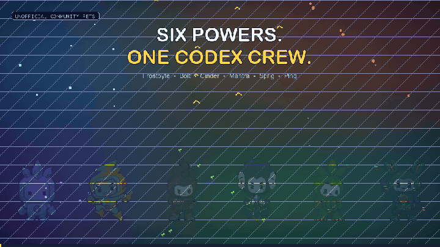

ICE / PRECISION
Frostbyte
A cool-headed crystal companion for precise, patient work. Symmetry, pale cyan facets, and a composed stance make calm focus visible.
PatientExactBalanced

Frostbyte stays cool under pressure. Bolt lives for the brave first pass. Both are fully animated, validated, and ready for Codex.
A cool-headed crystal companion for precise, patient work. Symmetry, pale cyan facets, and a composed stance make calm focus visible.
A bright, restless spark for rapid experiments and brave first passes. The swept crest and asymmetric stance are always ready to move.

Semantic states. Idle, movement, wave, jump, failure, waiting, active work, and review all communicate different app moments.
Direction discipline. Four hard cardinals, 12 intermediates, blind classification, and continuous clockwise motion.
Production packaging. Transparent WebP atlases, chroma cleanup, deterministic validation, installers, and v2 manifests.

Install them, remix them with attribution, or use the repository as a reference for your own personality-led pet.
Explore the repository